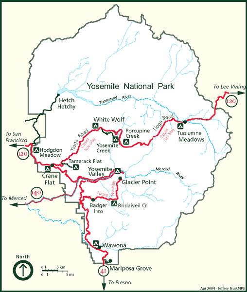
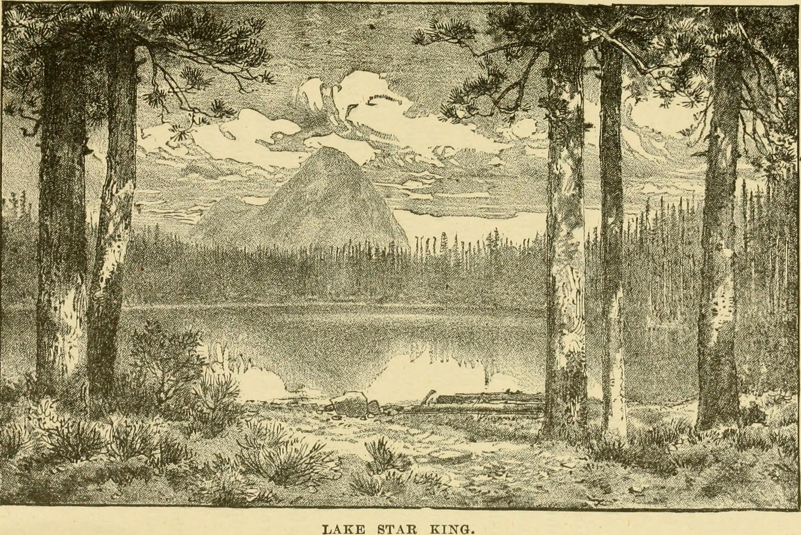

Yosemite National Park is a national park in the mountains of central California. The park is located east of San Francisco and Sacramento. It is bordered on the southeast by Sierra National Forest and on the northwest by Stanislaus National Forest. Designated a World Heritage Site in 1984, Yosemite is internationally recognized for its granite cliffs, waterfalls, clear streams, giant sequoia groves, lakes, mountains, meadows, glaciers, and biological diversity. Almost 95 percent of the park is designated wilderness. Yosemite is one of the largest and least fragmented habitat blocks in the Sierra Nevada.
The park was integral to the development of the concept of national parks. Galen Clark and others lobbied to protect Yosemite Valley from development, ultimately leading to President Abraham Lincoln's signing of the Yosemite Grant of 1864 that declared Yosemite as federally preserved land. In 1890, John Muir led a successful movement to motivate Congress to establish Yosemite Valley and its surrounding areas as a National Park. It receives around 4 million visitors annually.
Native people of Yosemite were called Ahwahneechee, which means "dwellers" in Ahwahnee. They were the only tribe that lived within the park boundaries.
The California Gold Rush was a danger to the native population. In less than 2 years, it brought 90,000 Europeans to the area, causing scarcity in resources. Competition for resources between gold miners and natives increased. About 70 years before the Gold Rush, the indigenous population was estimated to be 300,000, quickly dropping to 150,000, and just ten years later, only about 50,000 remained. Causes of this decline include disease, birth rate decreases, starvation, and conflicts from the American Indian Wars.
The competition and tension between the miners and Ahwahnee tribe led to a conflict called the Mariposa War. The Ahwahneechee fought back against the miners taking their land and resources, and in return, the California government sent in the Mariposa Battalion to subdue the indigenous people
Yosemite National Park is located in the central Sierra Nevada. Three wilderness areas are adjacent to Yosemite: the Ansel Adams Wilderness to the southeast, the Hoover Wilderness to the northeast, and the Emigrant Wilderness to the north. The 1,189 sq mi (3,080 square km) park contains thousands of lakes and ponds, 1,600 miles (2,600 km) of streams, 800 miles (1,300 km) of hiking trails, and 350 miles (560 km) of roads. Two federally designated Wild and Scenic Rivers, the Merced and the Tuolumne, begin within Yosemite's borders and flow westward through the Sierra foothills into the Central Valley of California.
Yosemite National Park is open year-round, though certain roads close during snowy months, usually from November through May or June.Certain trails also close during winter, including The 4-Mile Trail and part of The Mist Trail.
Activities include hiking, walking/running trails, climbing, rafting, swimming, and bike riding.
The natural and cultural history of Yosemite Valley is presented at the Yosemite Valley Visitor Center, the adjoining Yosemite Museum, and the Nature Center at Happy Isles. The parks' two National Historic Landmarks are the Sierra Club's LeConte Memorial Lodge (Yosemite's first public visitor center), and the Ahwahnee Hotel. Camp 4 is on the National Register of Historic Places.